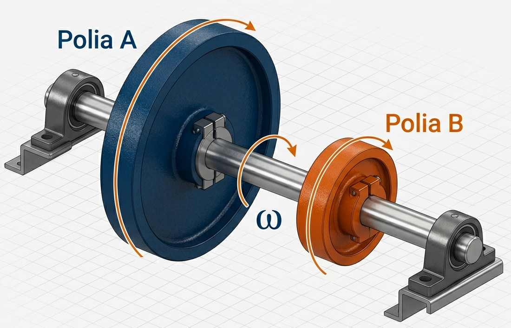
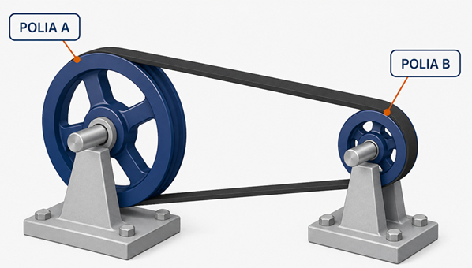
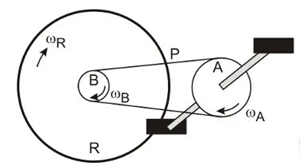
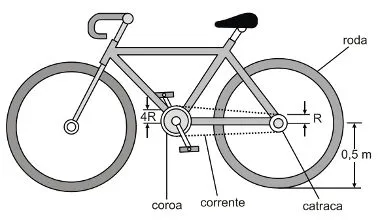
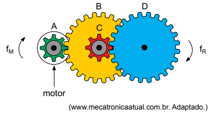
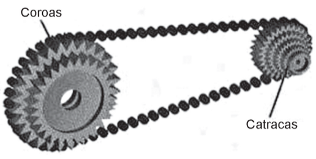

1º Ano | Aula 14: Acoplamento de Polias e Engrenagens
📚 Resumo
O Acoplamento de Polias estuda como o movimento circular é transmitido de um elemento para outro. Existem dois tipos principais: por eixo comum (mesma velocidade angular) e por contato ou correia (mesma velocidade linear).
Esse princípio é a base de máquinas simples, sistemas de transmissão de bicicletas, motores e relógios mecânicos.
📖 Acoplamento de Polias e Engrenagens
1. Acoplamento por Eixo Comum (Coaxial)
Quando duas polias estão fixas ao mesmo eixo, elas giram juntas. Isso implica que:

Figura 1: Acoplamento por Eixo Comum.
Velocidade Angular ($\omega$): É a mesma para ambas ($\omega_A = \omega_B$).
Frequência ($f$) e Período ($T$): São iguais ($f_A = f_B$ e $T_A = T_B$).
Velocidade Linear ($v$): É maior na polia de maior raio ($v = \omega \cdot R$).
2. Acoplamento por Correia ou Contato
Quando as polias estão ligadas por uma correia ou encostadas uma na outra (engrenagens):
Velocidade Linear ($v$): É a mesma em todos os pontos da correia ou no ponto de contato ($v_A = v_B$).
Relação Fundamental: $\omega_A \cdot R_A = \omega_B \cdot R_B$ ou $f_A \cdot R_A = f_B \cdot R_B$.
Proporcionalidade: A polia menor gira com maior frequência (mais rápido).

Figura 2: Acoplamento por Correia ou Contato.
3. Engrenagens com Dentes
Para engrenagens, o número de dentes ($N$) é proporcional ao raio. A relação de transmissão fica:
Tipo de Acoplamento
O que é igual?
Equação de Comparação
Mesmo Eixo
Angular ($\omega$)
$\frac{v_A}{R_A} = \frac{v_B}{R_B}$
Correia/Corrente
Linear ($v$)
$f_A \cdot R_A = f_B \cdot R_B$
Engrenagens
Linear ($v$)
$f_A \cdot N_A = f_B \cdot N_B$
💡 Física em Ação
🚴 Bicicleta
Ao mudar a marcha para uma catraca menor (raio menor), a roda traseira gira mais vezes para cada pedalada na coroa, aumentando a velocidade.
⚙️ Redutores
Em batedeiras e furadeiras, engrenagens de tamanhos diferentes são usadas para trocar alta velocidade de rotação por maior força (torque).
✅ 5 Questões Resolvidas (R 1 a 5)
R 1: Eixo Comum
Enunciado: Duas polias A e B estão no mesmo eixo. O raio de A é 10 cm e o de B é 30 cm. Se a velocidade linear de A é 2 m/s, qual a de B?
Enunciado: Duas rodas em contato giram sem deslizar. Se a roda maior tem o dobro do raio da menor, qual a relação entre suas velocidades angulares?
Resolução: $v_1 = v_2 \implies \omega_1 \cdot R_1 = \omega_2 \cdot R_2$.
Se $R_1 = 2 \cdot R_2$, então $\omega_1 \cdot (2R_2) = \omega_2 \cdot R_2$.
$\omega_2 = 2 \cdot \omega_1$. A menor gira com o dobro da velocidade angular.
R 5: Sentido de Rotação
Enunciado: Como se comportam os sentidos de rotação em acoplamentos por correia simples e por contato direto?
Resolução:
- Correia simples: Ambas giram no mesmo sentido.
- Contato direto (engrenagens): Giram em sentidos opostos.
✍️ 5 Questões Propostas (P 6 a 10)
P 6: Conceito de Período Coaxial
Enunciado: Duas polias no mesmo eixo possuem períodos diferentes? Explique.
Resolução: Não. No mesmo eixo, elas completam uma volta exatamente ao mesmo tempo, logo o período ($T$) é idêntico.
P 7: Polia de Bicicleta
Enunciado: Em uma bicicleta, a coroa tem raio de 12 cm e a catraca 4 cm. Se a coroa dá 1 volta, quantas voltas dá a catraca?
Enunciado: A polia A aciona B por correia. B está no mesmo eixo de C. Quem tem a maior velocidade angular?
Resolução: B e C têm a mesma velocidade angular ($\omega$). Se A for maior que B, B (e C) terão uma $\omega$ maior que A.
🎓 TESTES (T 11 a 15)
T 11: (Unifesp) Movimento Circular
Pai e filho passeiam de bicicleta e andam lado a lado com a mesma velocidade. Sabe-se que o diâmetro das rodas da bicicleta do pai é o dobro do diâmetro das rodas da bicicleta do filho. Pode-se afirmar que as rodas da bicicleta do pai giram com:
A) a metade da frequência e da velocidade angular com que giram as rodas da bicicleta do filho.
B) a mesma frequência e velocidade angular com que giram as rodas da bicicleta do filho.
C) o dobro da frequência e da velocidade angular com que giram as rodas da bicicleta do filho.
D) a mesma frequência das rodas da bicicleta do filho, mas com metade da velocidade angular.
E) a mesma frequência das rodas da bicicleta do filho, mas com o dobro da velocidade angular.
Resolução: Alternativa A.
Como os dois andam lado a lado, as velocidades lineares ($v$) nas extremidades das rodas são iguais ($v_p = v_f$). Sabemos que $v = \omega \cdot R$ e que o raio do pai ($R_p$) é o dobro do raio do filho ($R_f$):
$$ \begin{aligned}
v_p &= v_f \\
\omega_p \cdot R_p &= \omega_f \cdot R_f \\
\omega_p \cdot (2 \cdot R_f) &= \omega_f \cdot R_f \\
\omega_p \cdot 2 &= \omega_f \\
\omega_p &= \frac{\omega_f}{2}
\end{aligned} $$
Como a velocidade angular ($\omega$) é diretamente proporcional à frequência ($\omega = 2\pi f$), se a velocidade angular do pai é a metade, a sua frequência também será a metade da do filho.
T 12: (UFRGS) Sistema de Transmissão
A figura apresenta esquematicamente o sistema de transmissão de uma bicicleta convencional. Na bicicleta, a coroa A conecta-se à catraca B por meio da correia P. Por sua vez, B é ligada à roda traseira R, girando com ela quando o ciclista está pedalando. Nessa situação, supondo que a bicicleta se move sem deslizar, as magnitudes das velocidades angulares, $\omega_A$, $\omega_B$ e $\omega_R$, são tais que:

A) $\omega_A < \omega_B = \omega_R$
B) $\omega_A = \omega_B < \omega_R$
C) $\omega_A = \omega_B = \omega_R$
D) $\omega_A < \omega_B < \omega_R$
E) $\omega_A > \omega_B > \omega_R$
Resolução: Alternativa A.
A análise deve ser dividida em duas partes:
$$ \begin{aligned}
\text{1. Acoplamento por correia (A e B):} \\
\text{As velocidades lineares são iguais: } v_A &= v_B \\
\omega_A \cdot R_A &= \omega_B \cdot R_B \\
\text{Como o raio da coroa (} R_A \text{) é maior que o da catraca (} R_B \text{):} \\
\omega_A &< \omega_B \\
\\
\text{2. Acoplamento por eixo (B e R):} \\
\text{A catraca B e a roda R giram juntas no mesmo eixo:} \\
\omega_B &= \omega_R \\
\\
\text{Conclusão:} \\
\omega_A &< \omega_B = \omega_R
\end{aligned} $$
T 13: (UFPB) Transmissão e Velocidade Escalar
Em uma corrida de bicicleta, o ciclista desloca-se com velocidade escalar constante, mantendo um ritmo estável de pedaladas, capaz de imprimir no disco dianteiro (coroa) uma velocidade angular de $4\text{ rad/s}$. A configuração possui raio da coroa $R_{coroa} = 4R$, raio da catraca $R_{catraca} = R$ e o raio da roda $R_{roda} = 0,5\text{ m}$. Com base no exposto, conclui-se que a velocidade escalar do ciclista é:

A) 2 m/s
B) 4 m/s
C) 8 m/s
D) 12 m/s
E) 16 m/s
Resolução: Alternativa C.
A resolução ocorre em duas etapas: a transmissão da coroa para a catraca e o movimento da roda.
$$ \begin{aligned}
\text{1. Transmissão Coroa } \rightarrow \text{ Catraca (mesma velocidade linear):} \\
v_{coroa} &= v_{catraca} \\
\omega_{coroa} \cdot R_{coroa} &= \omega_{catraca} \cdot R_{catraca} \\
4 \cdot (4R) &= \omega_{catraca} \cdot R \\
16R &= \omega_{catraca} \cdot R \\
\omega_{catraca} &= 16\text{ rad/s} \\
\\
\text{2. Catraca e Roda (mesma velocidade angular):} \\
\omega_{roda} &= \omega_{catraca} = 16\text{ rad/s} \\
\\
\text{3. Velocidade escalar da bicicleta (velocidade linear da roda):} \\
v_{bicicleta} &= \omega_{roda} \cdot R_{roda} \\
v_{bicicleta} &= 16 \cdot 0,5 \\
v_{bicicleta} &= 8\text{ m/s}
\end{aligned} $$
T 14: (VUNESP) Sistema de Engrenagens
Um pequeno motor a pilha é utilizado para movimentar um carrinho de brinquedo. Um sistema de engrenagens
transforma a velocidade de rotação desse motor na velocidade de rotação adequada às rodas do carrinho. Esse
sistema é formado por quatro engrenagens, A, B, C e D, sendo que A está presa ao eixo do motor, B e C estão
presas a um segundo eixo e D a um terceiro eixo, no qual também estão presas duas das quatro rodas do carrinho.

Nessas condições, quando o motor girar com frequência f$_m$, as duas rodas do carrinho girarão com frequência f$_R$.
Sabendo que as engrenagens A e C possuem 8 dentes, que as engrenagens B e D possuem 24 dentes, que não há escorregamento entre elas e que f$_M$ = 13,5 Hz, é correto afirmar que f$_R$, em Hz, é igual a
A) 1,5.
B) 3,0.
C) 2,0.
D) 1,0.
E) 2,5.
Resolução: Alternativa A.
Vamos seguir o movimento do motor até as rodas passo a passo:
$$ \begin{aligned}
\text{1. De A (motor) para B (engrenamento):} \\
f_A \cdot N_A &= f_B \cdot N_B \\
13,5 \cdot 8 &= f_B \cdot 24 \\
f_B &= \frac{13,5 \cdot 8}{24} = \frac{13,5}{3} = 4,5\text{ Hz} \\
\\
\text{2. De B para C (mesmo eixo):} \\
\text{Engrenagens no mesmo eixo giram juntas: } \\
f_C &= f_B = 4,5\text{ Hz} \\
\\
\text{3. De C para D (engrenamento):} \\
f_C \cdot N_C &= f_D \cdot N_D \\
4,5 \cdot 8 &= f_D \cdot 24 \\
f_D &= \frac{4,5 \cdot 8}{24} = \frac{4,5}{3} = 1,5\text{ Hz} \\
\\
\text{Conclusão:} \\
\text{Como as rodas estão no eixo de D: } \\
f_R &= f_D = \mathbf{1,5\text{ Hz}}
\end{aligned} $$
T 15: (ENEM) Marchas de Bicicleta
Uma bicicleta do tipo mountain bike tem uma coroa com 3 engrenagens e uma catraca com 6 engrenagens, que, combinadas entre si, determinam 18 marchas (número de engrenagens da coroa vezes o número de engrenagens da catraca).

Os números de dentes das engrenagens das coroas e das catracas dessa bicicleta estão listados no quadro.
Engrenagens
1ª
2ª
3ª
4ª
5ª
6ª
N° de dentes da coroa
46
36
26
-
-
-
N° de dentes da catraca
24
22
20
18
16
14
Sabe-se que o número de voltas efetuadas pela roda traseira a cada pedalada é calculado dividindo-se a quantidade de dentes da coroa pela quantidade de dentes da catraca.
Durante um passeio em uma bicicleta desse tipo, deseja-se fazer um percurso o mais devagar possível, escolhendo, para isso, uma das seguintes combinações de engrenagens (coroa x catraca):
I
II
III
IV
V
$1^a \times 1^a$
$1^a \times 6^a$
$2^a \times 4^a$
$3^a \times 1^a$
$3^a \times 6^a$
A combinação escolhida para realizar esse passeio da forma desejada é
A) I
B) II
C) III
D) IV
E) V
Resolução: Alternativa D.
Para pedalar o mais devagar possível, a roda traseira deve girar o mínimo possível para cada pedalada. Isso ocorre quando a razão entre os dentes da coroa e da catraca resulta no menor valor numérico. Vamos calcular as opções sugeridas:
$$ \begin{aligned}
\text{I (1ª coro x 1ª cat): } \frac{46}{24} &\approx 1,91 \\
\text{II (1ª coro x 6ª cat): } \frac{46}{14} &\approx 3,28 \\
\text{III (2ª coro x 4ª cat): } \frac{36}{18} &= 2,00 \\
\text{IV (3ª coro x 1ª cat): } \frac{26}{24} &\approx \mathbf{1,08} \text{ (Menor razão)} \\
\text{V (3ª coro x 6ª cat): } \frac{26}{14} &\approx 1,85
\end{aligned} $$
A combinação IV (menor coroa disponível com a maior catraca disponível) é a que proporciona a menor velocidade escalar.